- O desafio
- A solução
- Equipe e processo
- Modelagem com DDD
- Requisitos
- Máquina de estados
- Arquitetura
- Regras de negócio
- Exemplos
- Segurança
- Qualidade e testes
- API e interface web
- Execução
- Entrega
- Aprendizados
O desafio
O Tech Challenge é o trabalho que fecha cada fase da pós-graduação: um projeto único, em grupo, que reúne o que foi estudado em todas as matérias. Na Fase 1 do curso de Arquitetura de Software, o desafio foi construir o MVP de um sistema para uma oficina mecânica, do primeiro contato com o cliente até a entrega do veículo.
O resultado é o SIAES, o Sistema Integrado de Atendimento e Execução de Serviços. Ele controla as ordens de serviço (OS), o orçamento, o estoque de peças e o acompanhamento pelo cliente, com regras de negócio explícitas, rastreabilidade de cada mudança de status e segurança no acesso às informações.
Esta página conta o projeto de ponta a ponta: da modelagem do negócio e da documentação até a execução, os testes, a análise de segurança e a entrega. Cada decisão aparece junto com o motivo, porque o aprendizado do desafio está tanto no que foi construído quanto no porquê.
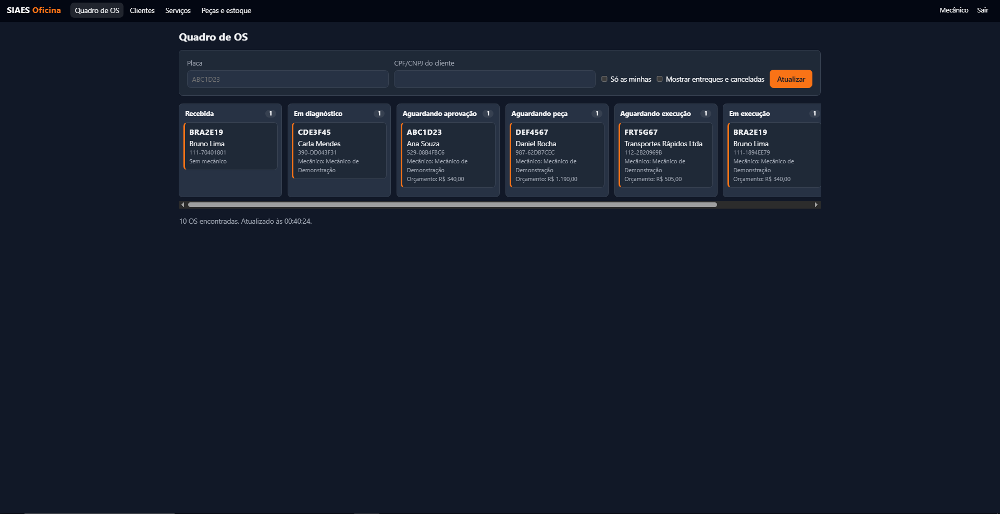
img/projetos/tech-challenge-1/capa-siaes.pngA solução
O sistema é uma API REST com duas frentes, que atendem públicos diferentes e têm regras de acesso diferentes.
| Frente | Quem usa | Como acessa | O que oferece |
|---|---|---|---|
| Loja | Atendente, Mecânico e Gerente | Login com token JWT e permissões por perfil (RBAC) | Cadastros de clientes, veículos, serviços, peças e usuários; abertura e acompanhamento das OS; diagnóstico, orçamento, execução e entrega; registro da decisão do cliente no balcão; relatório de tempos médios |
| Cliente | Cliente da oficina | Público, sem login: número da OS junto com CPF/CNPJ, com limite de requisições | Consulta do status e da estimativa de entrega; aprovação ou rejeição do orçamento |
Porta de entrada e de saída
Cadastra cliente e veículo, abre a OS e entrega o carro no final. Também registra no balcão a decisão que o cliente dá pessoalmente sobre o orçamento.
Diagnóstico e execução
Assume a OS, inclui serviços e peças, fecha o orçamento, inicia e conclui o serviço. Só o mecânico atribuído à OS (ou o Gerente) pode iniciá-la e concluí-la.
Gestão da oficina
Acesso total: catálogo, estoque, usuários, cancelamento de OS com motivo e o relatório de tempos médios.
Transparência
Acompanha a OS sem precisar ligar para a oficina e decide sobre o orçamento pelo celular, com a estimativa de entrega à vista.
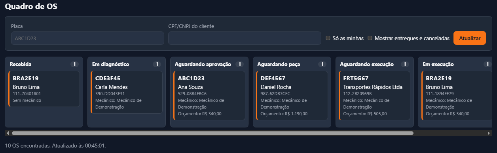
/oficina/.img/projetos/tech-challenge-1/web-oficina-quadro.png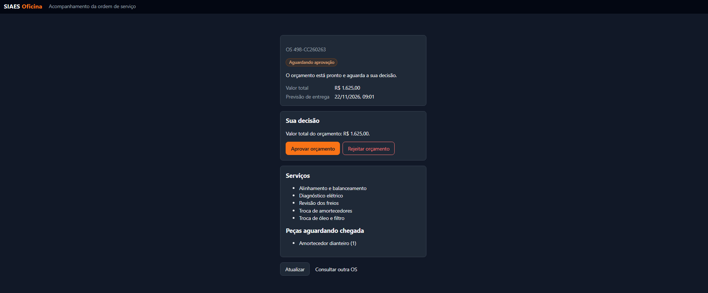
/cliente/, com uma OS consultada.img/projetos/tech-challenge-1/web-cliente.pngEquipe e forma de trabalho
O grupo tem quatro integrantes: Devysson Cardoso, Gabriel Vieira de Arimatéa, Guilherme Yamamoto e eu. O código fica no repositório vieira-gabriel/FIAP_SIAES.
Como organizamos o trabalho
- Roadmap em fases: da fundação (decisões e repositório) à entrega, passando por modelagem DDD, infraestrutura, domínio, cadastros, fluxo da OS, gestão, qualidade e documentação. Cada tarefa apontava os requisitos que atendia e era marcada como concluída no mesmo Pull Request.
- Nada direto na
main: toda mudança vinha por branch (tipo/descricao-curta) e Pull Request, citando os requisitos atendidos. Foram mais de 170 PRs. - Commits padronizados:
feat,fix,test,docs,refactorechore, em português, com a descrição do que mudou. - Definição de pronto: uma tarefa só fecha com revisão de outra pessoa, regra de dependência entre camadas respeitada, testes passando (inclusive as permissões por perfil), Swagger atualizado, linguagem ubíqua em dia e nenhum segredo no repositório.
- Documentação viva: o guia de desenvolvimento registra as decisões técnicas (as decididas e as em aberto), e um changelog guarda o porquê de cada mudança estrutural.
Minha participação
Atuei em quase todas as camadas do sistema. Os pontos principais:
O coração do sistema
Agregado OrdemServico com itens, orçamento, máquina de estados e histórico imutável; agregado EstoquePeca com reserva, baixa, estorno e alocação por prioridade; estimativa de entrega e eventos de domínio.
Do diagnóstico à entrega
Atribuição do mecânico, itens e conclusão do orçamento, reserva e alocação de peças, início da execução, conclusão, entrega, cancelamento pelo Gerente, aprovação e rejeição pelo cliente e consulta pública com limite de requisições.
Métricas
Relatório de tempos médios (execução, espera por peça e total da OS), com a decisão de medir pelo mês da finalização.
Evidências
Testes de integração dos fluxos principais, cenário de desempenho com Locust, revisão de XSS, revisão do Swagger, análise de vulnerabilidades, revisão de segredos e a evidência de cobertura.
Infraestrutura base
Unidade de trabalho e engine do SQLAlchemy, migrations com Alembic, montagem do container de dependências e o health check que verifica o banco.
Modelagem com DDD
Antes de qualquer linha de código, o grupo modelou o domínio com Domain-Driven Design. É o mesmo assunto da página de DDD, aqui aplicado a um problema real. O resultado ficou em três documentos: o Event Storming, a Linguagem Ubíqua e o modelo C4.
Event Storming
O board foi montado no Miro, com os post-its na ordem do fluxo: ator, comando, política, evento, modelo de leitura e agregado. Ele cobre o acompanhamento pelo cliente, a criação da OS, o ciclo de vida da OS aprovada e a gestão administrativa (acesso, serviços, peças, clientes, veículos e OS). O board é a fonte da verdade: quando muda, o PDF exportado é refeito no mesmo PR.
Abrir o board no Miro (leitura pública).
Um trecho do fluxo de criação da OS, reescrito como post-its. Repare que o status aparece como política, ou seja, uma reação a um evento:
Divergências que o grupo decidiu por escrito
Um board feito em oficina de post-its inevitavelmente diverge dos requisitos. Em vez de esconder isso, o documento do Event Storming tem uma tabela de divergências conhecidas, cada uma com a decisão do grupo. Alguns exemplos:
| Ponto | No board | Decisão |
|---|---|---|
| Identificação do cliente | "Entra com credenciais" sugere login | Prevalece o requisito: número da OS + CPF/CNPJ, sem login |
| Histórico de status | Cada mudança de status é uma política separada | O board continua assim; o histórico imutável fica garantido no código |
| Decisão no balcão | Só o cliente aprova ou reprova | Atendente e Gerente podem registrar a decisão dada pessoalmente, com origem USUARIO no histórico |
| Agregado de estoque | Aparece só na área do ciclo de vida da OS | Prevalece a Linguagem Ubíqua, que define o EstoquePeca |
| Cancelamento | Existia o comando "Remover OS" | Não há remoção de OS; o Gerente cancela, com motivo |
Linguagem Ubíqua
O vocabulário do negócio virou o vocabulário do código, com um glossário que liga cada termo à classe correspondente. Alguns dos termos centrais:
| Termo do negócio | O que significa | No código |
|---|---|---|
| Ordem de Serviço | Raiz do agregado principal: todo o ciclo de vida do atendimento | OrdemServico |
| Número da OS | 3 primeiros dígitos do CPF/CNPJ, hífen e 8 caracteres do UUID (ex.: 123-7F3A9C2B) | NumeroOS |
| Estoque | Quantidade física, reservada e saldo disponível de cada peça | EstoquePeca |
| Reserva | Peça separada para uma OS, sem sair ainda do estoque físico | Quantidade reservada em ItemPeca e EstoquePeca |
| Peça pendente | Parte do pedido que ficou sem saldo; é alocada na reposição, da OS mais antiga para a mais nova | Quantidade pendente em ItemPeca |
| Baixa | Saída definitiva das peças reservadas, no início da execução | EstoquePeca.baixar |
| Estorno | Devolução das reservas ao saldo quando a OS é rejeitada ou cancelada | EstoquePeca.estornar |
| Histórico de status | Registro imutável de cada transição: de, para, quando, origem, quem e motivo | HistoricoStatusOS |
Contextos delimitados e agregados
Dentro do núcleo existem dois agregados: OrdemServico, com itens, orçamento e histórico, e EstoquePeca, com as quantidades física e reservada de cada peça. Os objetos de valor carregam as regras de formato: CPF e CNPJ (com dígitos verificadores), Placa (padrão antigo e Mercosul), Valor (precisão decimal para dinheiro), NumeroOS, StatusOS e PerfilUsuario, entre outros.
Eventos de domínio
Quando a regra de um agregado precisa alterar o outro, ele emite um evento de domínio, e um despachante síncrono chama o handler dentro da mesma transação. Quando a reação fica dentro do mesmo agregado, o próprio método resolve e não existe evento. Foram quatro eventos:
| Evento | Quem emite | Quando | Reação |
|---|---|---|---|
OrcamentoFinalizadoEvent | OrdemServico | Orçamento concluído | Reservar as peças, deixando como pendente o que faltar |
OSCanceladaEvent | OrdemServico | Rejeição do orçamento ou cancelamento | Estornar as reservas ao saldo |
ExecucaoIniciadaEvent | OrdemServico | Início da execução | Dar baixa nas peças reservadas |
SaldoPecaAtualizadoEvent | EstoquePeca | Saldo disponível aumentou | Alocar o saldo às OS com pendência, da mais antiga para a mais nova |
Requisitos
Os requisitos foram escritos e versionados junto com o código: 27 funcionais (RF) e 16 não funcionais (RNF). Cada um traz a descrição do domínio, os perfis com acesso e o critério de aceite, e cada Pull Request cita os requisitos que atende. Isso é a rastreabilidade na prática: do requisito ao teste que o prova.
| Grupo | Requisitos | O que cobrem |
|---|---|---|
| Autenticação e usuários | RF-01 a RF-03 | Login JWT, RBAC, gestão de usuários e carga inicial |
| Clientes e veículos | RF-04 a RF-09 | Cadastro, validação de CPF/CNPJ e de placa, exclusão lógica |
| Catálogo e estoque | RF-10 a RF-12 | Serviços, peças e saldo |
| Ciclo da OS | RF-13 a RF-24 | Abertura, diagnóstico, orçamento, reserva, execução, entrega, cancelamento e histórico |
| Frente do cliente | RF-25 e RF-26 | Consulta pública e decisão sobre o orçamento |
| Métricas | RF-27 | Relatório de tempos médios |
| Arquitetura | RNF-01, RNF-02 | Monólito em camadas e domínio em Python puro |
| Segurança | RNF-03 a RNF-07 | JWT e RBAC, OWASP, rate limiting, segredos e vulnerabilidades |
| Persistência | RNF-08, RNF-09, RNF-11 | Transações ACID, PostgreSQL e valores congelados |
| Desempenho | RNF-10 | p95 abaixo de 500 ms |
| Qualidade | RNF-12 a RNF-14 | Testes de domínio, testes de integração e cobertura mínima de 80% |
| Entrega | RNF-15, RNF-16 | Docker Compose e Swagger |
Três status que o enunciado não tinha. A lista original tinha seis status. O grupo acrescentou AGUARDANDO_PECA (orçamento aprovado, mas falta peça), AGUARDANDO_EXECUCAO (aprovado e com tudo reservado, esperando o mecânico) e CANCELADA (rejeição ou cancelamento). Sem o segundo, o tempo médio de execução incluiria a fila de espera e deixaria de medir o trabalho do mecânico. Sem o terceiro, uma OS rejeitada ficaria para sempre em "aguardando aprovação". Cada acréscimo foi registrado com o motivo.
A máquina de estados da OS
O centro do sistema é a máquina de estados da OS. Cada transição é um método do agregado OrdemServico, que bloqueia qualquer mudança que não esteja prevista e grava um registro no histórico. Não existe "alterar status" livre: a única exceção ao fluxo normal é o cancelamento do Gerente, que exige motivo.
| De | Para | Ação | Quem executa |
|---|---|---|---|
| (abertura) | RECEBIDA | Abrir OS | Atendente, Gerente |
| RECEBIDA | EM_DIAGNOSTICO | Atribuir mecânico | Mecânico, Gerente |
| EM_DIAGNOSTICO | AGUARDANDO_APROVACAO | Finalizar orçamento | Mecânico, Gerente |
| AGUARDANDO_APROVACAO | AGUARDANDO_EXECUCAO ou AGUARDANDO_PECA | Aprovar orçamento | Cliente; Atendente e Gerente no balcão |
| AGUARDANDO_APROVACAO | CANCELADA | Rejeitar orçamento | Cliente; Atendente e Gerente no balcão |
| AGUARDANDO_PECA | AGUARDANDO_EXECUCAO | Liberar para execução | Sistema, na reposição do estoque |
| AGUARDANDO_EXECUCAO | EM_EXECUCAO | Iniciar execução | Mecânico atribuído, Gerente |
| EM_EXECUCAO | FINALIZADA | Concluir manutenção | Mecânico atribuído, Gerente |
| FINALIZADA | ENTREGUE | Entregar veículo | Atendente, Gerente |
| RECEBIDA a EM_EXECUCAO | CANCELADA | Cancelar | Gerente |
Toda transição gera um registro imutável no histórico: status anterior, novo status, data e hora, origem (USUARIO, CLIENTE ou SISTEMA), usuário e motivo. É esse histórico que permite auditar quem fez o quê e calcular os tempos do relatório de gestão.
Arquitetura
O SIAES é um monólito em camadas (RNF-01) modelado com DDD. Para um MVP de uma oficina, um monólito bem organizado entrega mais valor que microsserviços: uma única implantação, transações simples entre OS e estoque e menos peças móveis. O que importa é a organização interna, e é por isso que as camadas e a regra de dependência foram tratadas como requisito. É a aplicação direta do que vimos em Arquiteturas de Software.
- Regra de dependência: o domínio não importa nada das outras camadas. Os casos de uso dependem de interfaces (portas), não das implementações.
- Portas e adaptadores: banco, token e hash de senha são interfaces; só o
container.pyconhece as implementações concretas e as monta. - Unidade de trabalho: cada operação crítica roda em uma única transação, com rollback completo se algo falhar (RNF-08).
- Assíncrono de ponta a ponta: SQLAlchemy 2.0 com asyncpg; o bcrypt, que é pesado, roda fora do laço de eventos.
- Sem carregamento preguiçoso: as coleções são carregadas de forma explícita, o que evita consultas escondidas.
Modelo C4
A arquitetura foi documentada nos quatro níveis do C4, escritos em Mermaid dentro do próprio repositório: contexto (quem usa o sistema), contêineres (API e banco), componentes (rotas, casos de uso, handlers, repositórios) e código (diagrama de classes do domínio). É o que apresentei em Documentação de Arquiteturas, aplicado ao projeto.
flowchart TD
subgraph ATORES_LOJA ["🏢 Frente da Loja (Interno - JWT / RBAC)"]
Atendente["👤 Atendente
[Pessoa]
Realiza cadastro de clientes, veículos,
abertura de OS e entrega de veículos."]
Mecanico["👤 Mecânico
[Pessoa]
Realiza diagnósticos, insere itens/peças,
calcula orçamentos e executa serviços."]
Gerente["👤 Gerente / Admin
[Pessoa]
Administrador com acesso total (CRUD),
relatórios e gestão do catálogo/estoque."]
end
subgraph SISTEMA ["⚙️ Fronteira do Sistema"]
OficinaSystem["🚘 Sistema de Gestão de Oficina Mecânica
[Software System]
Gerencia o ciclo de vida completo de Ordens de Serviço,
controle atômico de estoque, cadastros e acompanhamento público."]
end
subgraph ATORES_CLIENTE ["📲 Frente do Cliente (Externo - Público)"]
Cliente["👤 Cliente
[Pessoa]
Consulta o status da OS em tempo real
e aprova ou rejeita orçamentos propostos."]
end
Atendente -->|"Cadastra clientes/veículos e abre OS
[HTTPS / REST API / JWT (Role: Atendente)]"| OficinaSystem
Mecanico -->|"Insere diagnósticos, peças e executa OS
[HTTPS / REST API / JWT (Role: Mecanico)]"| OficinaSystem
Gerente -->|"Administra sistema, estoque e relatórios
[HTTPS / REST API / JWT (Role: Gerente)]"| OficinaSystem
Cliente -->|"Consulta status da OS (Nº OS + CPF/CNPJ)
e aprova/rejeita orçamento [HTTPS / REST API Pública]"| OficinaSystem
flowchart TD
subgraph CLIENTES ["🌐 Camada de Entrada / Clientes HTTP"]
BrowserLoja["💻 Interface web /oficina/ (POC) ou Swagger UI
[Web Browser / OpenAPI]
Interface interativa para atendimento e mecânicos."]
BrowserCliente["📱 Interface web /cliente/ (POC)
[Web Browser / Mobile]
Acompanhamento público e aprovação de orçamento."]
end
subgraph DOCKER_COMPOSE ["🐳 Docker Compose Environment"]
subgraph BACKEND_CONTAINER ["Contêiner: app (Python 3.12)"]
FastAPIApp["⚡ API Back-end Monolítica
[Container: Python / FastAPI / Uvicorn]
Processa regras de negócio, autenticação JWT,
RBAC, máquina de estados da OS e APIs REST."]
end
subgraph DATABASE_CONTAINER ["Contêiner: db (PostgreSQL 16)"]
PostgresDB[("🐘 Banco de Dados Relacional
[Container: PostgreSQL 16]
Persistência transacional ACID de clientes, veículos,
serviços, estoque de peças e histórico de OSs.")]
end
end
BrowserLoja -->|"Chamadas de API Autenticadas
[JSON / HTTPS / Bearer JWT]"| FastAPIApp
BrowserCliente -->|"Consultas Públicas e Aprovação
[JSON / HTTPS / Rate-Limited]"| FastAPIApp
FastAPIApp -->|"Persistência e Leitura Transacional
[SQL / TCP Port 5432 / SQLAlchemy ORM]"| PostgresDB
flowchart TD
subgraph API_LAYER ["1. Camada de Apresentação / Entrada (src/presentation/)"]
RouterAutenticacao["🔐 routers/autenticacao.py
Rota pública de login e emissão do JWT."]
RouterOS["🛠️ routers/ordens_servico.py
Rotas administrativas de OS (Criar, Listar, Transicionar)."]
RouterClientes["👤 routers/clientes.py
Rotas de CRUD de Clientes."]
RouterVeiculos["🚗 routers/veiculos.py
Rotas de CRUD de Veículos."]
RouterUsuarios["👥 routers/usuarios.py
Rotas de gestão de usuários, só do Gerente."]
RouterServicos["🔧 routers/servicos.py
Rotas do catálogo de serviços."]
RouterEstoque["📦 routers/pecas.py
Rotas de gestão de peças, reposição e ajuste do estoque."]
RouterAcompanhamento["📲 routers/acompanhamento_publico.py
Rota desautenticada de consulta por número da OS e CPF/CNPJ."]
Dependencies["🛡️ middlewares/dependencies.py
obter_usuario_autenticado e exigir_perfis validam o token Bearer
e a claim 'role' (Atendente, Mecanico, Gerente)."]
RateLimit["⚡ middlewares/rate_limit.py
limiter do SlowAPI nas rotas públicas contra força bruta."]
InterfaceWeb["🖥️ middlewares/interface_web.py
Entrega as páginas de web/ (/oficina/ e /cliente/)
com CSP e cabeçalhos de segurança; as páginas chamam a API."]
end
subgraph APPLICATION ["2. Camada de Aplicação (src/application/)"]
CriarOS["⚙️ CriarOS"]
AtribuirMecanico["⚙️ AtribuirMecanico"]
FinalizarOrcamento["⚙️ FinalizarOrcamento"]
CancelarOS["⚙️ CancelarOS"]
AprovarOrcamento["⚙️ AprovarOrcamento"]
RejeitarOrcamento["⚙️ RejeitarOrcamento"]
IniciarExecucao["⚙️ IniciarExecucao"]
ConsultarOSPublica["⚙️ ConsultarOSPublica"]
LocalizarOSDoTitular["⚙️ LocalizarOSDoTitular
Número da OS + CPF/CNPJ do titular."]
Ports["🔌 Portas de Serviço (application/ports/)
TokenService, PasswordHasher,
UnidadeDeTrabalho, VerificadorDoBanco"]
EventDispatcher["⚡ EventDispatcher (In-Memory)
Barramento síncrono para eventos de domínio."]
ReservaHandler["📦 ReservaPecasHandler
Escuta OrcamentoFinalizadoEvent e reserva as peças da OS."]
EstornoHandler["📦 EstornoReservasHandler
Escuta OSCanceladaEvent e estorna as reservas da OS."]
EstoqueHandler["📦 BaixaEstoqueHandler
Escuta ExecucaoIniciadaEvent e efetua a baixa das peças reservadas."]
AlocacaoHandler["📦 AlocacaoPecasPendentesHandler
Escuta SaldoPecaAtualizadoEvent, aloca o saldo às OS pendentes
e libera as OS sem pendência."]
end
subgraph DOMAIN ["3. Camada de Domínio (src/domain/ - Pure Python Dataclasses)"]
AggOS[("🟩 Agregado: OrdemServico
Entidade-raiz com regras da máquina de estados.")]
AggEstoque[("🟩 Agregado: EstoquePeca
Entidade com controle quantitativo.")]
Entities["👤 Entidades
Cliente, Veiculo, Usuario, Servico, Peca."]
VOs["💎 Value Objects
Documento, CPF, CNPJ, Placa, Valor, NumeroOS, Orcamento,
StatusOS, PerfilUsuario, OrigemTransicao."]
DomainEvents["🟧 Eventos de Domínio
OrcamentoFinalizadoEvent, OSCanceladaEvent,
ExecucaoIniciadaEvent, SaldoPecaAtualizadoEvent."]
Repositories["🔌 Portas de Repositório (ABCs)
OrdemServicoRepository, EstoqueRepository, UsuarioRepository,
ClienteRepository, VeiculoRepository, ServicoRepository,
PecaRepository."]
end
subgraph INFRASTRUCTURE ["4. Camada de Infraestrutura (src/infrastructure/)"]
PgOSRepo["🐘 PostgresOrdemServicoRepository
Implementação concreta SQLAlchemy."]
PgEstoqueRepo["🐘 PostgresEstoqueRepository
Implementação concreta SQLAlchemy com Lock."]
PgCadastroRepo["🐘 PostgresClienteRepository, PostgresVeiculoRepository
Implementações concretas SQLAlchemy."]
JwtTokenService["🔐 JwtTokenService
Implementação de TokenService com PyJWT."]
BcryptHasher["🔐 BcryptPasswordHasher
Implementação de PasswordHasher."]
PgDatabase["🐘 SQLAlchemy Session / Postgres Driver"]
end
Dependencies --> RouterOS
Dependencies --> RouterClientes
Dependencies --> RouterVeiculos
Dependencies --> RouterEstoque
Dependencies --> RouterUsuarios
Dependencies --> RouterServicos
RateLimit --> RouterAcompanhamento
RouterOS --> CriarOS
RouterOS --> AtribuirMecanico
RouterOS --> FinalizarOrcamento
RouterOS --> IniciarExecucao
RouterAcompanhamento --> AprovarOrcamento
RouterAcompanhamento --> RejeitarOrcamento
RejeitarOrcamento --> LocalizarOSDoTitular
RejeitarOrcamento --> AggOS
RejeitarOrcamento --> EventDispatcher
RouterAcompanhamento --> ConsultarOSPublica
ConsultarOSPublica --> LocalizarOSDoTitular
AprovarOrcamento --> LocalizarOSDoTitular
LocalizarOSDoTitular --> Repositories
AprovarOrcamento --> AggOS
IniciarExecucao --> AggOS
FinalizarOrcamento --> EventDispatcher
IniciarExecucao --> EventDispatcher
AggOS -.->|emite| DomainEvents
AggEstoque -.->|emite| DomainEvents
EventDispatcher -->|OrcamentoFinalizadoEvent| ReservaHandler
EventDispatcher -->|OSCanceladaEvent| EstornoHandler
EventDispatcher -->|ExecucaoIniciadaEvent| EstoqueHandler
EventDispatcher -->|SaldoPecaAtualizadoEvent| AlocacaoHandler
ReservaHandler --> AggEstoque
ReservaHandler --> AggOS
EstornoHandler --> AggEstoque
EstoqueHandler --> AggEstoque
AlocacaoHandler --> AggEstoque
AlocacaoHandler --> AggOS
ReservaHandler --> Repositories
EstornoHandler --> Repositories
EstoqueHandler --> Repositories
AlocacaoHandler --> Repositories
CriarOS --> Repositories
AprovarOrcamento --> Repositories
JwtTokenService -.->|Implementa| Ports
BcryptHasher -.->|Implementa| Ports
PgOSRepo -.->|Implementa| Repositories
PgEstoqueRepo -.->|Implementa| Repositories
PgOSRepo --> PgDatabase
PgEstoqueRepo --> PgDatabase
classDiagram
class Cliente {
+UUID id
+str nome
+Documento documento
+str email
+str telefone
+bool ativo
}
class Veiculo {
+UUID id
+UUID cliente_id
+Placa placa
+str marca
+str modelo
+int ano
+bool ativo
}
class Usuario {
+UUID id
+str nome
+str email
+str senha_hash
+PerfilUsuario perfil
+bool ativo
}
class PerfilUsuario {
<<enumeration>>
ATENDENTE
MECANICO
GERENTE
}
class StatusOS {
<<enumeration>>
RECEBIDA
EM_DIAGNOSTICO
AGUARDANDO_APROVACAO
AGUARDANDO_PECA
AGUARDANDO_EXECUCAO
EM_EXECUCAO
FINALIZADA
ENTREGUE
CANCELADA
}
class OrdemServico {
+UUID id
+NumeroOS numero
+UUID cliente_id
+UUID veiculo_id
+UUID atendente_id
+Optional~UUID~ mecanico_id
+StatusOS status
+List~ItemServico~ servicos
+List~ItemPeca~ pecas
+datetime data_abertura
+Optional~datetime~ data_inicio_execucao
+Optional~datetime~ data_finalizacao
+Optional~Orcamento~ orcamento
+Tuple~HistoricoStatusOS~ historico
+List~DomainEvent~ _domain_events
+abrir(numero: NumeroOS, cliente_id: UUID, veiculo_id: UUID, atendente_id: UUID) OrdemServico
+atribuir_mecanico(mecanico: Usuario, responsavel: Usuario) void
+incluir_servico(servico: Servico) void
+incluir_peca(peca: Peca, quantidade: int) void
+remover_servico(servico_id: UUID) void
+remover_peca(peca_id: UUID) void
+congelar_valores(servicos_vigentes: List~Servico~, pecas_vigentes: List~Peca~) void
+finalizar_orcamento(usuario_id: UUID, servicos_vigentes: List~Servico~, pecas_vigentes: List~Peca~) void
+aprovar_orcamento(usuario_id: Optional~UUID~) void
+rejeitar_orcamento(usuario_id: Optional~UUID~) void
+alocar_peca(peca_id: UUID, quantidade: int) void
+liberar_para_execucao() void
+iniciar_execucao(usuario: Usuario) void
+concluir_manutencao(usuario: Usuario) void
+entregar_veiculo(usuario_id: UUID) void
+cancelar(usuario_id: UUID, motivo: str) void
+estimar_entrega(momento_consulta: datetime) Optional~datetime~
+collect_domain_events() List~DomainEvent~
}
class ItemServico {
+UUID servico_id
+str nome
+Valor preco_congelado
+int tempo_estimado_minutos
+congelar(servico: Servico) void
}
class ItemPeca {
+UUID peca_id
+str nome
+int quantidade
+int quantidade_reservada
+int quantidade_pendente
+Valor preco_unitario_congelado
+int prazo_reposicao_dias
+valor_total() Valor
+congelar(peca: Peca) void
+marcar_como_pendente() void
}
class Orcamento {
<<Value Object>>
+Valor subtotal_servicos
+Valor subtotal_pecas
+Valor total
}
class HistoricoStatusOS {
+UUID id
+Optional~StatusOS~ status_anterior
+StatusOS status_novo
+datetime data_hora
+OrigemTransicao origem
+Optional~UUID~ usuario_id
+Optional~str~ motivo
}
class OrigemTransicao {
<<enumeration>>
USUARIO
CLIENTE
SISTEMA
}
class Servico {
+UUID id
+str codigo
+str nome
+str descricao
+Valor valor_base
+int tempo_estimado_minutos
+bool ativo
}
class Peca {
+UUID id
+str codigo_referencia
+str nome
+Valor preco_unitario
+int prazo_reposicao_dias
+bool ativo
}
class EstoquePeca {
+UUID peca_id
+int quantidade_fisica
+int quantidade_reservada
+List~DomainEvent~ _domain_events
+saldo_disponivel() int
+reservar(quantidade: int) tuple
+alocar_pendencias(pendencias: List~PendenciaPeca~) List~AlocacaoPeca~
+baixar(quantidade: int) void
+estornar(quantidade: int) void
+repor(quantidade: int) void
+ajustar_quantidade_fisica(nova_quantidade: int) void
+collect_domain_events() List~DomainEvent~
}
class PendenciaPeca {
<<Value Object>>
+UUID os_id
+datetime data_abertura_os
+int quantidade_pendente
}
class AlocacaoPeca {
<<Value Object>>
+UUID os_id
+int quantidade_reservada
}
class QuantidadePeca {
<<Value Object>>
+UUID peca_id
+int quantidade
}
class Valor {
<<Value Object>>
+Decimal valor
+somar(outro: Valor) Valor
+multiplicar(quantidade: int) Valor
}
class NumeroOS {
<<Value Object>>
+str valor
}
class Documento {
<<abstract>>
+str valor
+tres_primeiros_digitos() str
}
class CPF {
<<Value Object>>
}
class CNPJ {
<<Value Object>>
}
class Placa {
<<Value Object>>
+str valor
+eh_mercosul() bool
}
class DomainEvent {
<<interface>>
+str event_id
+datetime occurred_on
}
class OrcamentoFinalizadoEvent {
+UUID os_id
}
class OSCanceladaEvent {
+UUID os_id
+List~QuantidadePeca~ estornos
}
class ExecucaoIniciadaEvent {
+UUID os_id
+List~QuantidadePeca~ baixas
}
class SaldoPecaAtualizadoEvent {
+UUID peca_id
+int saldo_disponivel
}
Usuario "1" --> "1" PerfilUsuario : possui
Cliente --> Documento : documento
Documento <|-- CPF : pessoa física
Documento <|-- CNPJ : pessoa jurídica
NumeroOS ..> Documento : usa tres_primeiros_digitos
Veiculo "*" --> "1" Cliente : pertence a (cliente_id)
OrdemServico "*" --> "1" Cliente : referencia (cliente_id)
OrdemServico "*" --> "1" Veiculo : referencia (veiculo_id)
OrdemServico "*" --> "1" Usuario : atendente (atendente_id)
OrdemServico "*" --> "0..1" Usuario : mecanico (mecanico_id)
OrdemServico "1" *-- "*" ItemServico : contem
OrdemServico "1" *-- "*" ItemPeca : contem
OrdemServico --> StatusOS : possui estado
OrdemServico --> NumeroOS : numero
OrdemServico "1" *-- "0..1" Orcamento : orcamento
OrdemServico "1" *-- "*" HistoricoStatusOS : historico
HistoricoStatusOS --> OrigemTransicao : origem
ItemServico "*" --> "1" Servico : referencia (servico_id)
ItemPeca "*" --> "1" Peca : referencia (peca_id)
EstoquePeca "1" --> "1" Peca : controla o estoque de (peca_id)
ItemServico --> Valor : preco_congelado
ItemPeca --> Valor : preco_unitario_congelado
Servico --> Valor : valor_base
Peca --> Valor : preco_unitario
Orcamento --> Valor : subtotais e total
DomainEvent <|-- OrcamentoFinalizadoEvent : herda de
DomainEvent <|-- OSCanceladaEvent : herda de
DomainEvent <|-- ExecucaoIniciadaEvent : herda de
DomainEvent <|-- SaldoPecaAtualizadoEvent : herda de
OrdemServico *-- DomainEvent : acumula eventos
EstoquePeca *-- DomainEvent : acumula eventos
EstoquePeca ..> PendenciaPeca : recebe
EstoquePeca ..> AlocacaoPeca : devolve
OSCanceladaEvent --> QuantidadePeca : estornos
ExecucaoIniciadaEvent --> QuantidadePeca : baixas
Estrutura de diretórios
.
├── src/
│ ├── domain/ entidades, objetos de valor, eventos, portas de repositório
│ ├── application/ casos de uso, handlers de eventos, Event Dispatcher, portas técnicas
│ ├── infrastructure/ banco (SQLAlchemy), repositórios PostgreSQL, JWT e bcrypt, configuração
│ └── presentation/ FastAPI: rotas, schemas, middlewares, container e interface web
├── migrations/ versões do schema (Alembic)
├── tests/
│ ├── unit/ sem banco e sem HTTP
│ ├── integration/ fluxos de ponta a ponta com PostgreSQL
│ └── desempenho/ cenário do Locust
├── docs/
│ ├── ddd/ Event Storming, Linguagem Ubíqua e modelo C4
│ ├── evidencias/ cobertura e desempenho
│ └── security/ vulnerabilidades e segredos
├── .github/workflows/ pipeline de CI
├── Dockerfile imagem multi-stage
└── docker-compose.yml serviços app e dbTecnologias
| Área | Tecnologia |
|---|---|
| Linguagem | Python 3.12 |
| API | FastAPI e Uvicorn, com Swagger em /docs |
| Banco | PostgreSQL 16, com SQLAlchemy 2.0 assíncrono (asyncpg) e migrations Alembic |
| Segurança | PyJWT, bcrypt e SlowAPI (rate limiting) |
| Dependências | uv, com pyproject.toml e uv.lock |
| Testes e qualidade | pytest, pytest-asyncio, pytest-cov, httpx, Ruff e Locust |
| Análise de segurança | pip-audit, Bandit, Trivy e gitleaks |
| Execução e CI | Docker, Docker Compose e GitHub Actions |
Por que PostgreSQL
- Estrutura relacional forte: cliente tem veículos, cada OS pertence a um cliente e a um veículo e tem itens de serviço e de peça. O modelo relacional representa isso de forma natural.
- Integridade referencial: chaves estrangeiras e restrições de unicidade impedem que um dado duplicado ou uma exclusão corrompa o histórico. Clientes, veículos, serviços e peças têm exclusão lógica, para as OS antigas continuarem íntegras.
- Consistência atômica: reservar, baixar e estornar peças altera a OS e o estoque ao mesmo tempo. Transações ACID garantem que tudo aconteça junto ou nada aconteça, e o controle de concorrência impede que duas OS reservem o mesmo saldo.
As regras de negócio mais interessantes
Algumas regras pareciam simples no papel e deram mais trabalho na prática. Estas são as que mais ensinaram.
Reserva, pendência e prioridade da OS mais antiga
Ao fechar o orçamento, o sistema reserva as peças da OS. Se não houver saldo suficiente, o orçamento sai mesmo assim: reserva-se o que existe e o resto fica pendente. Quando o estoque é reposto, o saldo vai primeiro para a OS aberta há mais tempo. Um exemplo com uma peça cujo estoque físico é 4:
| Passo | O que acontece | Físico | Reservada | Saldo |
|---|---|---|---|---|
| 0 | Situação inicial | 4 | 0 | 4 |
| 1 | OS-A fecha o orçamento pedindo 3: reserva as 3 | 4 | 3 | 1 |
| 2 | OS-B (mais nova) pede 2: reserva 1, fica com 1 pendente | 4 | 4 | 0 |
| 3 | O cliente da OS-B aprova: a OS vai para AGUARDANDO_PECA | 4 | 4 | 0 |
| 4 | O mecânico repõe 2 peças: o saldo vira 2, o handler aloca 1 para a OS-B, que fica sem pendência e vai sozinha para AGUARDANDO_EXECUCAO | 6 | 5 | 1 |
Concorrência: duas OS disputando a mesma peça
Se dois mecânicos fecham orçamentos ao mesmo tempo, os dois podem ler "saldo 1" e reservar a mesma peça. Para impedir isso, os casos de uso bloqueiam as linhas envolvidas (SELECT ... FOR UPDATE) sempre na mesma ordem: primeiro a OS, depois os estoques das peças, em ordem de id. A ordem fixa evita a maior parte dos impasses (deadlocks). Quando ainda assim ocorre um impasse, a transação inteira é repetida. Isso é coberto por testes que usam um PostgreSQL de verdade, inclusive um que provoca o impasse no banco.
Preços congelados
No momento em que o orçamento é concluído, o preço de cada serviço e de cada peça, o tempo estimado do serviço e o prazo de reposição da peça são copiados para a OS. Se o catálogo mudar depois, o valor cotado ao cliente e a estimativa de entrega não mudam (RNF-11). Os valores monetários são NUMERIC(12, 2) no banco e trafegam como texto no JSON, sem erro de ponto flutuante.
Estimativa de entrega
A data prevista é calculada em tempo corrido, com a soma dos tempos dos serviços e o maior prazo de reposição entre as peças pendentes, e depende do momento da OS:
| Status | Estimativa mostrada ao cliente |
|---|---|
| RECEBIDA, EM_DIAGNOSTICO | Nenhuma: os serviços ainda não foram definidos |
| AGUARDANDO_APROVACAO, AGUARDANDO_PECA | Agora + prazo das peças pendentes + duração dos serviços |
| AGUARDANDO_EXECUCAO | Agora + duração dos serviços |
| EM_EXECUCAO | Início da execução + duração dos serviços |
| FINALIZADA, ENTREGUE | A data de finalização registrada |
| CANCELADA | Nenhuma |
Acompanhamento público sem vazar informação
O cliente não tem login: ele se identifica com o número da OS e o CPF/CNPJ. Se o número não existe ou o documento não confere, a resposta é exatamente a mesma, sem dizer qual dos dois errou. Assim, ninguém descobre OS de outras pessoas por tentativa. A resposta também esconde dados pessoais e custos internos.
Relatório de tempos médios
O Gerente vê o tempo médio de execução (por mecânico), o tempo médio de espera por peça e o tempo total da OS, agrupados por período. O enunciado não definia o período, então o grupo escolheu o mês da finalização: a métrica só existe depois que a OS termina e não muda mais. A média de espera por peça considera apenas as OS que de fato esperaram.
Exemplos
Dois pedaços do domínio, simplificados para ficarem curtos e independentes de framework. São versões didáticas escritas por mim, e não o código do repositório, mas seguem a mesma ideia.
Transição de status com histórico
A OS só aceita as mudanças previstas na tabela de transições e guarda cada uma no histórico. Qualquer outra levanta um erro. Esta versão reduzida tem seis dos nove status.
class TransicaoInvalida(Exception):
pass
PERMITIDAS = {
"RECEBIDA": {"EM_DIAGNOSTICO"},
"EM_DIAGNOSTICO": {"AGUARDANDO_APROVACAO"},
"AGUARDANDO_APROVACAO": {"EM_EXECUCAO", "CANCELADA"},
"EM_EXECUCAO": {"FINALIZADA"},
}
class OrdemServico:
def __init__(self):
self.status = "RECEBIDA"
# cada linha do histórico: (status anterior, novo status, origem)
self.historico = [(None, "RECEBIDA", "USUARIO")]
def mudar_status(self, novo, origem):
if novo not in PERMITIDAS.get(self.status, set()):
raise TransicaoInvalida(f"{self.status} -> {novo}")
self.historico.append((self.status, novo, origem))
self.status = novo
os_ = OrdemServico()
os_.mudar_status("EM_DIAGNOSTICO", "USUARIO")
os_.mudar_status("AGUARDANDO_APROVACAO", "USUARIO")
os_.mudar_status("EM_EXECUCAO", "CLIENTE") # aprovação feita pelo portal
try:
os_.mudar_status("RECEBIDA", "USUARIO") # voltar não é permitido
except TransicaoInvalida as erro:
print("bloqueado:", erro)
import java.util.ArrayList;
import java.util.List;
import java.util.Map;
import java.util.Set;
public class OrdemServico {
record Registro(String anterior, String novo, String origem) {}
static final Map<String, Set<String>> PERMITIDAS = Map.of(
"RECEBIDA", Set.of("EM_DIAGNOSTICO"),
"EM_DIAGNOSTICO", Set.of("AGUARDANDO_APROVACAO"),
"AGUARDANDO_APROVACAO", Set.of("EM_EXECUCAO", "CANCELADA"),
"EM_EXECUCAO", Set.of("FINALIZADA")
);
String status = "RECEBIDA";
final List<Registro> historico = new ArrayList<>(
List.of(new Registro(null, "RECEBIDA", "USUARIO")));
void mudarStatus(String novo, String origem) {
if (!PERMITIDAS.getOrDefault(status, Set.of()).contains(novo)) {
throw new IllegalStateException(status + " -> " + novo);
}
historico.add(new Registro(status, novo, origem));
status = novo;
}
public static void main(String[] args) {
OrdemServico os = new OrdemServico();
os.mudarStatus("EM_DIAGNOSTICO", "USUARIO");
os.mudarStatus("AGUARDANDO_APROVACAO", "USUARIO");
os.mudarStatus("EM_EXECUCAO", "CLIENTE"); // aprovação feita pelo portal
try {
os.mudarStatus("RECEBIDA", "USUARIO"); // voltar não é permitido
} catch (IllegalStateException erro) {
System.out.println("bloqueado: " + erro.getMessage());
}
}
}
package main
import "fmt"
var permitidas = map[string][]string{
"RECEBIDA": {"EM_DIAGNOSTICO"},
"EM_DIAGNOSTICO": {"AGUARDANDO_APROVACAO"},
"AGUARDANDO_APROVACAO": {"EM_EXECUCAO", "CANCELADA"},
"EM_EXECUCAO": {"FINALIZADA"},
}
type Registro struct{ Anterior, Novo, Origem string }
type OrdemServico struct {
Status string
Historico []Registro
}
func Abrir() *OrdemServico {
return &OrdemServico{
Status: "RECEBIDA",
Historico: []Registro{{"", "RECEBIDA", "USUARIO"}},
}
}
func (o *OrdemServico) MudarStatus(novo, origem string) error {
for _, destino := range permitidas[o.Status] {
if destino == novo {
o.Historico = append(o.Historico, Registro{o.Status, novo, origem})
o.Status = novo
return nil
}
}
return fmt.Errorf("%s -> %s", o.Status, novo)
}
func main() {
os := Abrir()
os.MudarStatus("EM_DIAGNOSTICO", "USUARIO")
os.MudarStatus("AGUARDANDO_APROVACAO", "USUARIO")
os.MudarStatus("EM_EXECUCAO", "CLIENTE") // aprovação feita pelo portal
if err := os.MudarStatus("RECEBIDA", "USUARIO"); err != nil { // voltar não é permitido
fmt.Println("bloqueado:", err)
}
}
(def permitidas
{"RECEBIDA" #{"EM_DIAGNOSTICO"}
"EM_DIAGNOSTICO" #{"AGUARDANDO_APROVACAO"}
"AGUARDANDO_APROVACAO" #{"EM_EXECUCAO" "CANCELADA"}
"EM_EXECUCAO" #{"FINALIZADA"}})
(defn abrir []
{:status "RECEBIDA"
:historico [{:anterior nil :novo "RECEBIDA" :origem "USUARIO"}]})
(defn mudar-status [os novo origem]
(if (contains? (get permitidas (:status os) #{}) novo)
(-> os
(update :historico conj {:anterior (:status os) :novo novo :origem origem})
(assoc :status novo))
(throw (ex-info (str (:status os) " -> " novo) {:status (:status os)}))))
(def os-aprovada
(-> (abrir)
(mudar-status "EM_DIAGNOSTICO" "USUARIO")
(mudar-status "AGUARDANDO_APROVACAO" "USUARIO")
(mudar-status "EM_EXECUCAO" "CLIENTE"))) ; aprovação feita pelo portal
(try
(mudar-status os-aprovada "RECEBIDA" "USUARIO") ; voltar não é permitido
(catch Exception e
(println "bloqueado:" (ex-message e))))
#include <stdio.h>
#include <string.h>
typedef enum { RECEBIDA, EM_DIAGNOSTICO, AGUARDANDO_APROVACAO,
EM_EXECUCAO, FINALIZADA, CANCELADA, N_STATUS } Status;
static const char *NOMES[N_STATUS] = {
"RECEBIDA", "EM_DIAGNOSTICO", "AGUARDANDO_APROVACAO",
"EM_EXECUCAO", "FINALIZADA", "CANCELADA"
};
/* PERMITIDAS[de][para] == 1 quando a transição é válida */
static const int PERMITIDAS[N_STATUS][N_STATUS] = {
[RECEBIDA] = { [EM_DIAGNOSTICO] = 1 },
[EM_DIAGNOSTICO] = { [AGUARDANDO_APROVACAO] = 1 },
[AGUARDANDO_APROVACAO] = { [EM_EXECUCAO] = 1, [CANCELADA] = 1 },
[EM_EXECUCAO] = { [FINALIZADA] = 1 },
};
typedef struct { Status status; } OrdemServico;
/* devolve 0 em caso de sucesso e -1 quando a transição é bloqueada */
int mudar_status(OrdemServico *os, Status novo) {
if (!PERMITIDAS[os->status][novo]) return -1;
os->status = novo;
return 0;
}
int main(void) {
OrdemServico os = { RECEBIDA };
mudar_status(&os, EM_DIAGNOSTICO);
mudar_status(&os, AGUARDANDO_APROVACAO);
mudar_status(&os, EM_EXECUCAO);
if (mudar_status(&os, RECEBIDA) != 0) { /* voltar não é permitido */
printf("bloqueado: %s -> %s\n", NOMES[os.status], NOMES[RECEBIDA]);
}
return 0;
}
Alocação de peças pela OS mais antiga
Dado o saldo disponível e as pendências, o saldo é distribuído começando pela OS aberta há mais tempo. No exemplo, com saldo 4, a OS-A recebe 3 e a OS-B recebe 1 e continua com uma pendente. O custo é dominado pela ordenação, O(n log n), e a estratégia é gulosa, como vimos em LeetCode e Algoritmos.
def alocar_pendencias(saldo, pendencias):
"""pendencias: lista de (os, dia_de_abertura, quantidade).
Devolve a lista de (os, quantidade) com a OS mais antiga primeiro."""
alocacoes = []
for os_, _, pedida in sorted(pendencias, key=lambda p: p[1]):
if saldo == 0:
break
dada = min(pedida, saldo)
alocacoes.append((os_, dada))
saldo -= dada
return alocacoes
# Saldo de 4 peças; a OS-A (aberta no dia 1) espera 3 e a OS-B (dia 2) espera 2
print(alocar_pendencias(4, [("OS-B", 2, 2), ("OS-A", 1, 3)]))
# [('OS-A', 3), ('OS-B', 1)] -> a OS-B continua com 1 peça pendente
import java.util.ArrayList;
import java.util.Comparator;
import java.util.List;
public class Estoque {
record Pendencia(String os, int dia, int quantidade) {}
record Alocacao(String os, int quantidade) {}
static List<Alocacao> alocarPendencias(int saldo, List<Pendencia> pendencias) {
List<Pendencia> ordenadas = new ArrayList<>(pendencias);
ordenadas.sort(Comparator.comparingInt(Pendencia::dia)); // mais antiga primeiro
List<Alocacao> alocacoes = new ArrayList<>();
for (Pendencia p : ordenadas) {
if (saldo == 0) break;
int dada = Math.min(p.quantidade(), saldo);
alocacoes.add(new Alocacao(p.os(), dada));
saldo -= dada;
}
return alocacoes;
}
public static void main(String[] args) {
var resultado = alocarPendencias(4, List.of(
new Pendencia("OS-B", 2, 2),
new Pendencia("OS-A", 1, 3)));
System.out.println(resultado);
// [Alocacao[os=OS-A, quantidade=3], Alocacao[os=OS-B, quantidade=1]]
}
}
package main
import (
"fmt"
"sort"
)
type Pendencia struct {
OS string
Dia int
Quantidade int
}
type Alocacao struct {
OS string
Quantidade int
}
func AlocarPendencias(saldo int, pendencias []Pendencia) []Alocacao {
ordenadas := append([]Pendencia(nil), pendencias...)
sort.Slice(ordenadas, func(i, j int) bool { return ordenadas[i].Dia < ordenadas[j].Dia })
var alocacoes []Alocacao
for _, p := range ordenadas {
if saldo == 0 {
break
}
dada := min(p.Quantidade, saldo)
alocacoes = append(alocacoes, Alocacao{p.OS, dada})
saldo -= dada
}
return alocacoes
}
func main() {
fmt.Println(AlocarPendencias(4, []Pendencia{{"OS-B", 2, 2}, {"OS-A", 1, 3}}))
// [{OS-A 3} {OS-B 1}]
}
(defn alocar-pendencias
"pendencias: mapas com :os, :dia e :qtd. Devolve as alocações, a OS mais antiga primeiro."
[saldo pendencias]
(loop [saldo saldo
[p & resto] (sort-by :dia pendencias)
alocacoes []]
(if (or (nil? p) (zero? saldo))
alocacoes
(let [dada (min (:qtd p) saldo)]
(recur (- saldo dada)
resto
(conj alocacoes {:os (:os p) :qtd dada}))))))
(alocar-pendencias 4 [{:os "OS-B" :dia 2 :qtd 2}
{:os "OS-A" :dia 1 :qtd 3}])
;; => [{:os "OS-A", :qtd 3} {:os "OS-B", :qtd 1}]
#include <stdio.h>
#include <stdlib.h>
typedef struct { const char *os; int dia; int quantidade; } Pendencia;
static int por_dia(const void *a, const void *b) {
return ((const Pendencia *)a)->dia - ((const Pendencia *)b)->dia;
}
/* Preenche 'dada[i]' com a quantidade reservada para a i-ésima pendência,
já ordenada da OS mais antiga para a mais nova. */
void alocar_pendencias(int saldo, Pendencia *pendencias, int n, int *dada) {
qsort(pendencias, n, sizeof(Pendencia), por_dia);
for (int i = 0; i < n; i++) {
dada[i] = pendencias[i].quantidade < saldo ? pendencias[i].quantidade : saldo;
saldo -= dada[i];
}
}
int main(void) {
Pendencia pendencias[] = { {"OS-B", 2, 2}, {"OS-A", 1, 3} };
int dada[2];
alocar_pendencias(4, pendencias, 2, dada);
for (int i = 0; i < 2; i++)
printf("%s recebe %d\n", pendencias[i].os, dada[i]);
/* OS-A recebe 3
OS-B recebe 1 */
return 0;
}
Segurança
A segurança entrou nos requisitos, não só no fim, em linha com o que estudei em Desenvolvimento Seguro. Cada controle tem um requisito e um teste.
| Risco | Controle no SIAES | Requisito |
|---|---|---|
| Acesso indevido às rotas da loja | Token JWT com o perfil na claim role; sem token responde 401, com perfil sem permissão responde 403. Senhas guardadas só como hash bcrypt | RNF-03, RF-01 a RF-03 |
| SQL Injection | Apenas ORM e consultas parametrizadas | RNF-04 |
| IDOR e enumeração de OS | Consulta e decisão públicas exigem número da OS e CPF/CNPJ; resposta única para "não encontrada" | RNF-04, RF-25, RF-26 |
| XSS | Texto livre com < é recusado (400) por um objeto de valor compartilhado; a interface web envia cabeçalhos de segurança | RNF-04 |
| Força bruta e negação de serviço | Rate limiting de 10 requisições por minuto por IP nas rotas públicas (SlowAPI) | RNF-05 |
| Vazamento de segredos | Nada de credencial no repositório: tudo vem do ambiente, e a aplicação não inicia se uma variável obrigatória faltar | RNF-06 |
| Vulnerabilidades conhecidas | pip-audit, Bandit e Trivy, com justificativa de cada achado | RNF-07 |
Segredos
Uma revisão com o gitleaks percorreu todo o histórico, incluindo as branches remotas e as referências de Pull Request (que um git fetch comum não traz): 364 commits, sem nenhum segredo real. O único alerta foi um falso positivo, em que a regra atravessou a quebra de linha do .env.example e tomou como segredo a configuração pública de expiração do token. Ele ficou registrado no .gitleaksignore. O .env nunca foi versionado.
Análise de vulnerabilidades
| Ferramenta | Alvo | Crítico | Alto | Médio | Baixo |
|---|---|---|---|---|---|
| pip-audit | 34 dependências de produção | 0 | 0 | 0 | 0 |
| Bandit | Código-fonte (cerca de 7,2 mil linhas) | 0 | 0 | 0 | 0 |
| Trivy (imagem) | Imagem Docker da aplicação | 0 | 45 | 72 | 61 |
| Trivy (config) | Dockerfile | 0 | 0 | 0 | 1 |
Os achados da imagem estão todos em pacotes do sistema operacional da imagem base (Debian), sem correção publicada. Cada grupo foi analisado: são utilitários como mount, nsenter, ncurses e SQLite, que a aplicação não executa, e o processo roda sem privilégios. A primeira varredura encontrou 6 vulnerabilidades no pip da imagem base, e a correção foi remover o pip da imagem final, já que a aplicação roda por um ambiente virtual próprio.
O que reduz a superfície de ataque
- Imagem base
slim, com o mínimo de pacotes - Build multi-stage: ferramentas de build ficam fora da imagem final
- Processo com usuário sem privilégio (UID 10001) e código somente leitura para ele
pipremovido da imagem final.enve segredos fora da imagem
O que fica registrado
- Achados sem correção são justificados, não escondidos
- A análise é refeita sobre o commit final da entrega
- O único alerta de configuração (falta de
HEALTHCHECKno Dockerfile) está justificado: ele existe no Compose
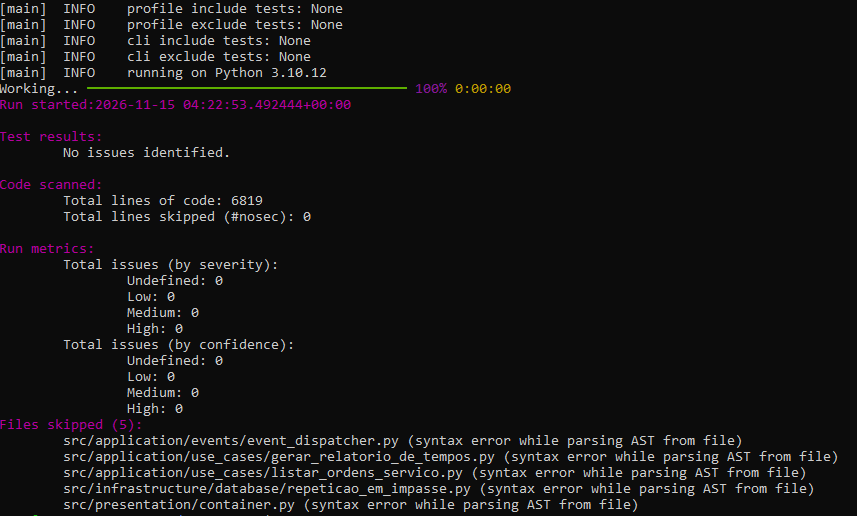
img/projetos/tech-challenge-1/analise-vulnerabilidades.pngQualidade e testes
O projeto tem 1.872 testes, sendo 1.249 unitários e 623 de integração, e cerca de 18 mil linhas de teste para 8,4 mil de código de produção. A estratégia segue o que vimos em Qualidade de Software.
Regra de negócio isolada
Sem banco e sem HTTP. Cobrem objetos de valor (CPF, CNPJ, placa), a máquina de estados, o cálculo do orçamento e as regras de estoque: reserva, pendência, prioridade, baixa e estorno. Repositórios em memória substituem o banco.
Fluxos reais, banco real
Rodam pelas rotas HTTP contra um PostgreSQL de teste, recriado a cada execução: fluxo completo da OS, rejeição e cancelamento com estorno, peça pendente liberada pela reposição, permissões 401 e 403, concorrência e migrations.
Locust
10 usuários por 60 segundos, com a mistura de listagens, detalhamento, consultas de catálogo e abertura de OS. O cenário falha sozinho se o p95 passar de 500 ms ou se houver qualquer erro.
| Evidência | Resultado | Meta |
|---|---|---|
Cobertura de src/domain | 100% (1.210 instruções) | 80% |
Cobertura de src/application | 100% (1.185 instruções) | 80% |
| Tempo de resposta, p95 | 62 ms (mediana de 20 ms, p99 de 210 ms) | abaixo de 500 ms |
| Requisições medidas | 582, com 0 erros | sem erros |
Um limite assumido por escrito. O teste de desempenho mede leituras e a abertura de OS. As operações que bloqueiam linhas de OS e estoque (fechar orçamento, repor peça, cancelar) ficaram fora do cenário, e o relatório diz claramente que o p95 não diz nada sobre elas. Medir menos, mas dizer o que não foi medido, é mais útil que um número bonito sem contexto.
Pipeline de integração contínua
A cada Pull Request e a cada push na main, o GitHub Actions sobe um PostgreSQL 16 e executa a verificação completa. As ações usadas ficam fixadas pelo hash do commit, para que uma tag alterada não mude o pipeline.
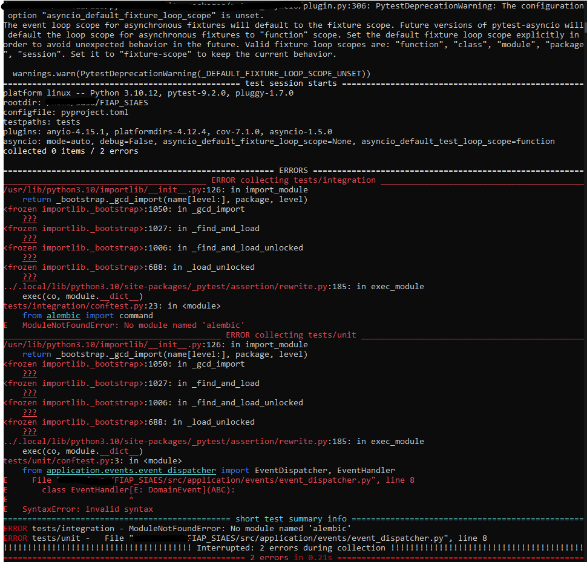
pytest --cov mostrando os testes passando e 100% de cobertura.img/projetos/tech-challenge-1/testes-cobertura.png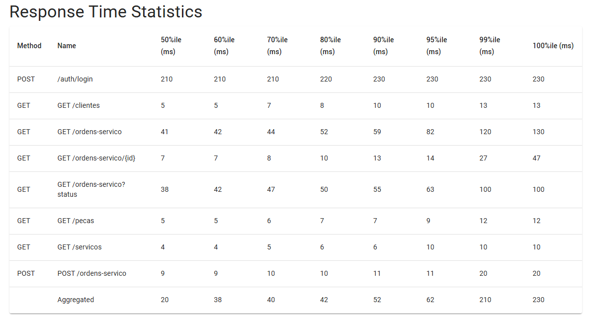
docs/evidencias/desempenho/).img/projetos/tech-challenge-1/locust.png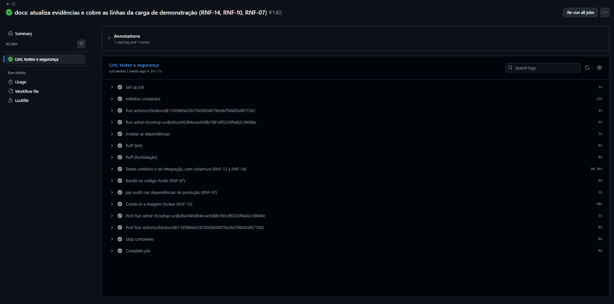
img/projetos/tech-challenge-1/ci-github-actions.pngAPI e interface web
A API tem 51 rotas, todas documentadas no Swagger (/docs), com os esquemas de entrada e saída, os códigos de status e o esquema de autenticação Bearer. Uma revisão do Swagger encontrou 15 rotas cujo erro 422 aparecia com o formato padrão do FastAPI, enquanto a API devolvia outro. Depois da correção, um teste automatizado protege o contrato, para a documentação nunca mais divergir do comportamento.
| Recurso | Rotas | Quem acessa |
|---|---|---|
/auth | Login | Todos os usuários internos |
/usuarios | CRUD, troca de senha, desativar e reativar | Gerente |
/clientes e /veiculos | CRUD com exclusão lógica | Atendente e Gerente escrevem; Mecânico consulta |
/servicos | CRUD do catálogo | Todos consultam; só o Gerente altera |
/pecas | CRUD, reposição e ajuste da quantidade física | Todos consultam; Mecânico e Gerente movimentam o estoque; só o Gerente altera o cadastro |
/ordens-servico | Abertura, listagem com filtros, detalhamento, mecânico, serviços, peças, orçamento, aprovação e rejeição no balcão, execução, conclusão, entrega e cancelamento | Varia por ação, conforme a tabela de transições |
/acompanhamento | Consulta, aprovação e rejeição pelo cliente | Público, com número da OS + CPF/CNPJ e limite de 10 por minuto |
/relatorios/tempos-medios | Relatório de gestão | Gerente |
/health | Estado da aplicação e do banco | Público |
Para a demonstração, a aplicação também traz uma interface web sem etapa de build (HTML, CSS e JavaScript puros), servida pela própria API: uma página para a oficina (/oficina/) e outra para o cliente (/cliente/). O menu e os botões mudam conforme o perfil de quem entrou.
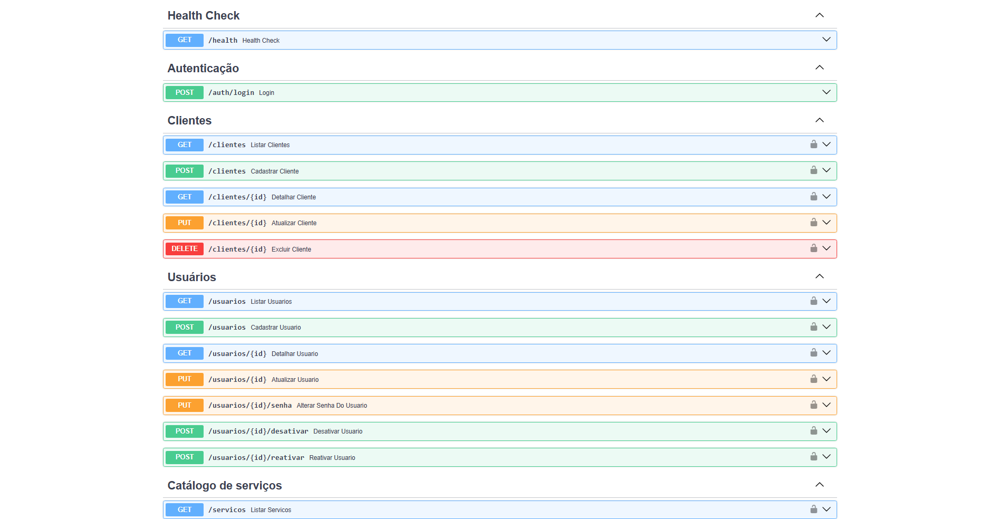
/docs, com as rotas agrupadas por recurso.img/projetos/tech-challenge-1/swagger.png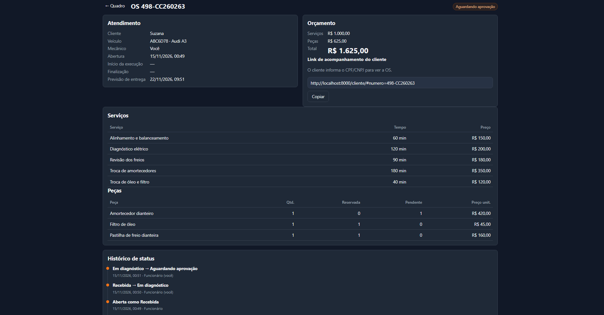
img/projetos/tech-challenge-1/web-oficina-detalhe-os.png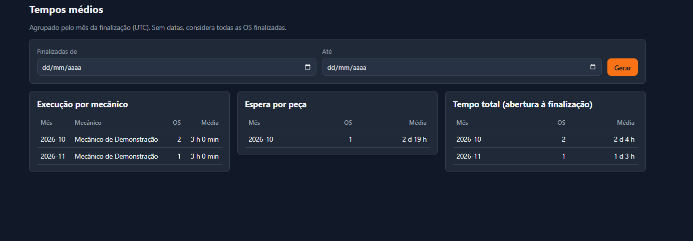
img/projetos/tech-challenge-1/web-relatorio-tempos.pngExecução
Um único comando sobe o ambiente completo. A imagem é construída em dois estágios, e na subida do contêiner as migrations são aplicadas, o usuário Gerente padrão é criado e, com SEED_DEMO=true, também os dados de demonstração.
# 1. variáveis de ambiente (o app não inicia se as obrigatórias estiverem vazias)
cp .env.example .env
# 2. sobe a API e o PostgreSQL
docker compose up --build
# 3. conferência
curl http://localhost:8000/health| Endereço | O que é |
|---|---|
http://localhost:8000/docs | Swagger |
http://localhost:8000/oficina/ | Interface da loja (Atendente, Mecânico e Gerente) |
http://localhost:8000/cliente/ | Interface do cliente, sem login |
http://localhost:8000/health | Estado da aplicação e do banco |
Dados de demonstração
Para avaliar o sistema sem cadastrar tudo à mão, a carga inicial cria 5 serviços, 3 peças com estoque, 5 clientes com um veículo cada e 10 ordens de serviço, uma em cada status (com mais de uma em alguns), com datas no passado. Há inclusive uma OS que esperou peça por 67 horas, para o relatório de tempos ter o que mostrar. A carga não duplica nada quando o contêiner reinicia.
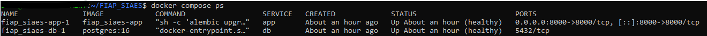
docker compose ps com os serviços app e db como healthy.img/projetos/tech-challenge-1/docker-compose.png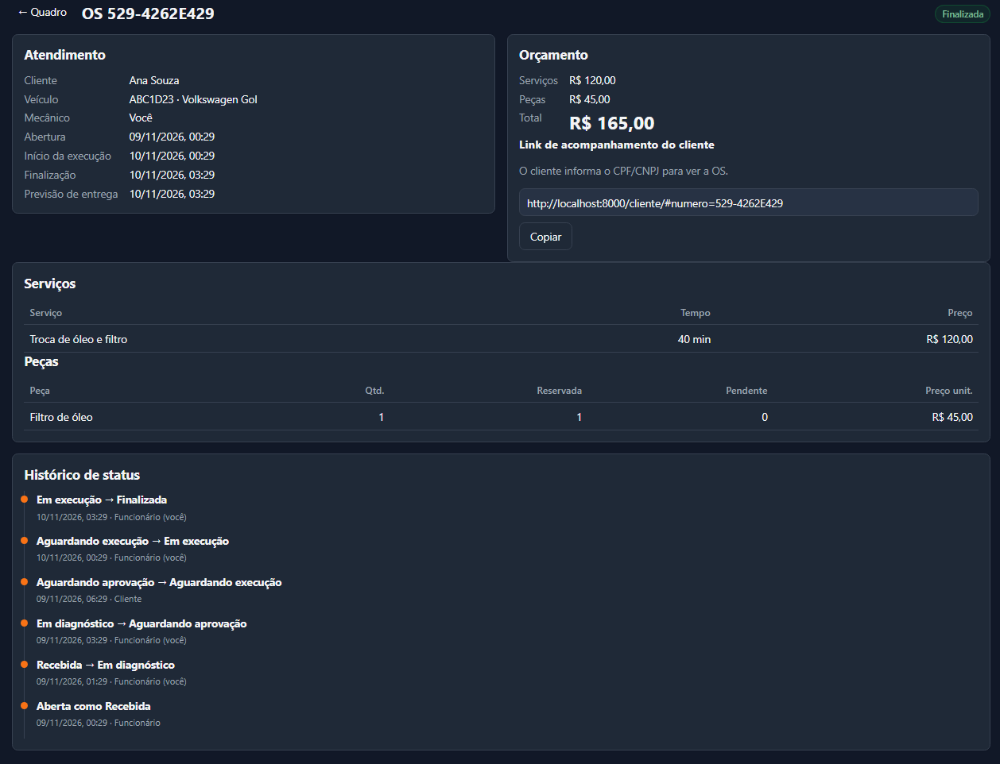
img/projetos/tech-challenge-1/fluxo-os-demonstracao.pngEntrega
A correção considera apenas o commit informado na entrega, então boa parte do trabalho final foi conferir que tudo estava coerente com o código daquele commit: refazer a cobertura, a análise de vulnerabilidades e a revisão de segredos sobre a versão final e conferir se o board, os diagramas e a documentação ainda correspondiam ao código.
| Item da entrega | Onde está |
|---|---|
| Código e histórico | github.com/vieira-gabriel/FIAP_SIAES |
| README | Objetivo, solução, arquitetura, tecnologias, banco, execução, testes, Swagger, usuários de demonstração e estrutura de diretórios |
| Documentação DDD | Event Storming (board e PDF), Linguagem Ubíqua e modelo C4, em docs/ddd/ |
| Requisitos | docs/requisitos-funcionais.md e docs/requisitos-nao-funcionais.md |
| Evidências | Cobertura e desempenho em docs/evidencias/; vulnerabilidades e segredos em docs/security/ |
O vídeo tinha de cobrir: a proposta da solução, a arquitetura e a organização do monólito, a escolha do banco, o Event Storming, os elementos de DDD, a criação e o acompanhamento da OS, a inclusão de serviços e peças, a geração e a aprovação do orçamento, a mudança de status, a autenticação das APIs, a execução da aplicação, o Swagger, os testes automatizados e a análise de vulnerabilidades.
O que levo daqui
O Tech Challenge foi o ponto em que as matérias deixaram de ser assuntos separados. Cada uma apareceu como uma decisão concreta:
| Matéria | Onde apareceu no SIAES |
|---|---|
| Domain-Driven Design | Event Storming, linguagem ubíqua, agregados OrdemServico e EstoquePeca, objetos de valor e eventos de domínio |
| Arquiteturas de Software | Monólito em camadas, regra de dependência, portas e adaptadores, C4, RNFs e registro das decisões técnicas |
| Qualidade de Software | 1.872 testes, repositórios em memória, testes de integração com banco real, 100% de cobertura no núcleo e CI |
| Desenvolvimento Seguro | JWT e RBAC, OWASP (SQL Injection, IDOR, XSS), rate limiting, gestão de segredos, pip-audit, Bandit e Trivy |
| Documentação de Arquiteturas | C4, requisitos rastreáveis, guia de decisões, changelog da documentação e documentação junto do código |
| LeetCode e Algoritmos | Alocação gulosa por prioridade, atenção à complexidade e escolha de estruturas de dados |
- Modelar o negócio antes de programar poupa retrabalho: o vocabulário do Event Storming virou nome de classe, de método e de teste.
- Regra de negócio dentro do domínio, sem depender de framework, torna os testes rápidos e a cobertura de 100% realista.
- Decisão sem registro vira discussão repetida. O guia de decisões e o changelog pouparam muitas conversas.
- Concorrência não aparece nos testes comuns. Foi preciso escrever testes que provocam a disputa e o impasse no banco de verdade.
- Mostrar o que não foi medido ou resolvido é parte da engenharia, tanto quanto o que foi.
- Trabalhar em grupo com Pull Request revisado, commits padronizados e definição de pronto deu ritmo e qualidade ao time.
Links do projeto
- Repositório do SIAES no GitHub
- Board de Event Storming no Miro
- EVANS, Eric. Domain-Driven Design. Addison-Wesley, 2003.
- BROWN, Simon. The C4 Model for Visualising Software Architecture. c4model.com
- OWASP Foundation. OWASP Top 10. owasp.org
- FastAPI, SQLAlchemy, Alembic, PostgreSQL e uv: documentações oficiais de cada projeto.